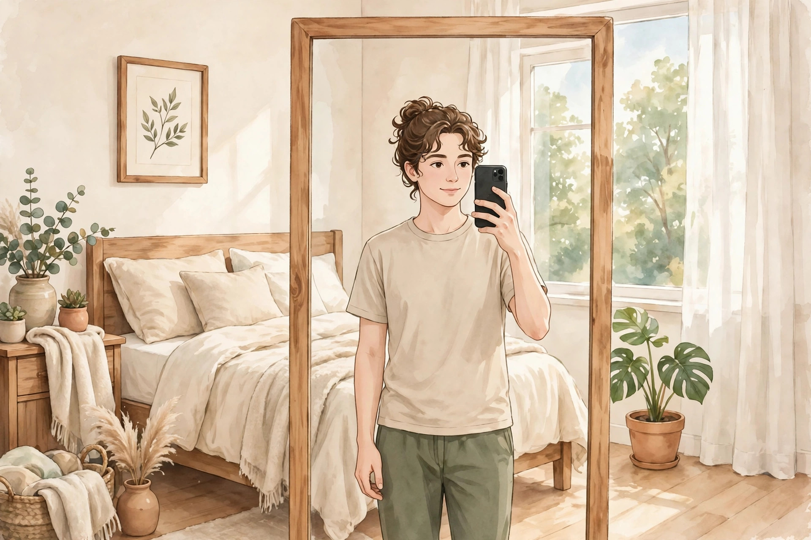

Vintage 1980s Look Prompts: 10 Ideas for Gemini and ChatGPT 2026

Try Prompt 3 first, the denim jacket on the street. My big hair try was fun, but the hair ate my face. The denim jacket is the easiest eighties look to pull off, and it suits almost everyone. Get one good one first, then go wild with the hair.
The eighties had a look all of their own. Big hair, denim jackets, polka dots, leather, cassette players, and photos with that soft film grain we all recognise now. It was loud, and it was fun.
These prompts bring that look back. They keep your face the same and dress the photo in eighties style. A retro jacket, a street scene, a party, a dance floor in warm light.
I tested them on a plain photo of myself, taken by a window in daylight. The denim jacket worked first time. The big hair took three tries, and the third one finally looked like me with bigger hair, not a stranger.
One warning from my own tries. The styling is strong, so your starting photo needs to be stronger. A clear face beats a fancy outfit every time.
Before you start
Retro photos work when the style stays clear and the face stays yours. These five points keep it that way.
- Use a photo where your face is clear and facing the camera. The eighties styling is strong, so the face needs to be stronger.
- Pick a starting photo with a simple background. The prompt adds retro detail, and it needs room for it.
- Keep your expression relaxed and natural. A real smile suits a retro photo far better than a forced pose.
- Copy the prompt exactly as it is the first time. Change one thing later if you need to, not five at once.
- Save the best result, then try once more. Film grain and light vary a little each run, and the second version is often the more convincing one.
Table of contents
- Prompt 1: In a retro jacket, film photo
- Prompt 2: With big hair, 1980s style
- Prompt 3: In a denim jacket, street
- Prompt 4: With sunglasses, retro car
- Prompt 5: In a polka dot dress
- Prompt 6: At a retro party
- Prompt 7: Close up, film grain
- Prompt 8: In a leather jacket
- Prompt 9: With a cassette player
- Prompt 10: Dancing, retro light
- Bonus 1: At the roller rink
- Bonus 2: Under a neon sign
- Bonus 3: Laughing on a landline phone
- How to use these prompts
- Tips to get a better result
- Common mistakes to avoid
- Frequently asked questions
10 copy and paste prompts
Pick the eighties scene you like most, copy the prompt, and paste it with your photo. The denim jacket is my pick for a first try.
1. In a retro jacket, film photo
Create a realistic, natural photo from my uploaded photo. Keep the face exactly the same as in the uploaded photo, with the same eyes, smile, hair and skin tone. Do not change the person into someone else, and do not make the skin look smooth or plastic. Show you in a retro 1980s jacket, in a film style photo, with soft colours and a plain background. Keep the pose relaxed and natural, with a real expression, not a stiff studio pose. Use soft, natural light that suits the scene, with clear detail in the face, hair and clothes. Keep the background simple so the person stays the main focus. Shoot it in a vertical 3 to 4 frame, as if taken on a 35mm lens with a shallow depth of field. The final photo should look like a real photo taken on a good day, with true colours, gentle shadows and a calm, honest feel. It should work well for a profile photo, a print, or a post with family and friends.
A retro jacket with film grain is the heart of this look. The grain softens the photo, the jacket adds the era, and your face stays clear.
2. With big hair, 1980s style
Create a realistic, natural photo from my uploaded photo. Keep the face exactly the same as in the uploaded photo, with the same eyes, smile, hair and skin tone. Do not change the person into someone else, and do not make the skin look smooth or plastic. Show you with 1980s style hair, in a simple retro outfit, with warm light and a plain background. Keep the pose relaxed and natural, with a real expression, not a stiff studio pose. Use soft, natural light that suits the scene, with clear detail in the face, hair and clothes. Keep the background simple so the person stays the main focus. Shoot it in a vertical 3 to 4 frame, as if taken on a 50mm lens with a shallow depth of field. The final photo should look like a real photo taken on a good day, with true colours, gentle shadows and a calm, honest feel. It should work well for a profile photo, a print, or a post with family and friends.
Big hair is the boldest eighties choice, and it works because the prompt keeps the rest simple. The hair does the talking, the portrait stays clean.
3. In a denim jacket, street
Create a realistic, natural photo from my uploaded photo. Keep the face exactly the same as in the uploaded photo, with the same eyes, smile, hair and skin tone. Do not change the person into someone else, and do not make the skin look smooth or plastic. Show you in a denim jacket on a street, in 1980s style, with soft light. Keep the pose relaxed and natural, with a real expression, not a stiff studio pose. Use soft, natural light that suits the scene, with clear detail in the face, hair and clothes. Keep the background simple so the person stays the main focus. Shoot it in a vertical 3 to 4 frame, as if taken on a 85mm portrait lens with a shallow depth of field. The final photo should look like a real photo taken on a good day, with true colours, gentle shadows and a calm, honest feel. It should work well for a profile photo, a print, or a post with family and friends.
A denim jacket on the street is the most wearable eighties look. Everyday clothes, an everyday street, a retro feel that does not try too hard.
4. With sunglasses, retro car
Create a realistic, natural photo from my uploaded photo. Keep the face exactly the same as in the uploaded photo, with the same eyes, smile, hair and skin tone. Do not change the person into someone else, and do not make the skin look smooth or plastic. Show you with retro sunglasses by an old car, smiling, with warm light. Keep the pose relaxed and natural, with a real expression, not a stiff studio pose. Use soft, natural light that suits the scene, with clear detail in the face, hair and clothes. Keep the background simple so the person stays the main focus. Shoot it in a vertical 3 to 4 frame, as if taken on a 35mm lens with a shallow depth of field. The final photo should look like a real photo taken on a good day, with true colours, gentle shadows and a calm, honest feel. It should work well for a profile photo, a print, or a post with family and friends.
Sunglasses with a retro car add cool without any effort. The car stays soft behind you, the glasses frame your face, and the photo feels like a film still.
5. In a polka dot dress
Create a realistic, natural photo from my uploaded photo. Keep the face exactly the same as in the uploaded photo, with the same eyes, smile, hair and skin tone. Do not change the person into someone else, and do not make the skin look smooth or plastic. Show you in a polka dot dress, in 1980s style, with a plain warm background. Keep the pose relaxed and natural, with a real expression, not a stiff studio pose. Use soft, natural light that suits the scene, with clear detail in the face, hair and clothes. Keep the background simple so the person stays the main focus. Shoot it in a vertical 3 to 4 frame, as if taken on a 50mm lens with a shallow depth of field. The final photo should look like a real photo taken on a good day, with true colours, gentle shadows and a calm, honest feel. It should work well for a profile photo, a print, or a post with family and friends.
A polka dot dress is pure eighties fun. The pattern is busy, so the prompt keeps the background plain, and the balance works.
6. At a retro party
Create a realistic, natural photo from my uploaded photo. Keep the face exactly the same as in the uploaded photo, with the same eyes, smile, hair and skin tone. Do not change the person into someone else, and do not make the skin look smooth or plastic. Show you at a retro party, in 1980s clothes, smiling, with warm lights. Keep the pose relaxed and natural, with a real expression, not a stiff studio pose. Use soft, natural light that suits the scene, with clear detail in the face, hair and clothes. Keep the background simple so the person stays the main focus. Shoot it in a vertical 3 to 4 frame, as if taken on a 85mm portrait lens with a shallow depth of field. The final photo should look like a real photo taken on a good day, with true colours, gentle shadows and a calm, honest feel. It should work well for a profile photo, a print, or a post with family and friends.
A retro party is loud in the best way. Lights, music, people around you. The energy carries the photo, and your smile carries the rest.
7. Close up, film grain
Create a realistic, natural photo from my uploaded photo. Keep the face exactly the same as in the uploaded photo, with the same eyes, smile, hair and skin tone. Do not change the person into someone else, and do not make the skin look smooth or plastic. Show you in a close up 1980s film style photo, with soft film grain and a plain background. Keep the pose relaxed and natural, with a real expression, not a stiff studio pose. Use soft, natural light that suits the scene, with clear detail in the face, hair and clothes. Keep the background simple so the person stays the main focus. Shoot it in a vertical 3 to 4 frame, as if taken on a 35mm lens with a shallow depth of field. The final photo should look like a real photo taken on a good day, with true colours, gentle shadows and a calm, honest feel. It should work well for a profile photo, a print, or a post with family and friends.
A close crop with film grain is about texture and face. The grain adds age, the light adds warmth, and the portrait feels like it came from an old album.
8. In a leather jacket
Create a realistic, natural photo from my uploaded photo. Keep the face exactly the same as in the uploaded photo, with the same eyes, smile, hair and skin tone. Do not change the person into someone else, and do not make the skin look smooth or plastic. Show you in a leather jacket, in 1980s style, with a plain street background. Keep the pose relaxed and natural, with a real expression, not a stiff studio pose. Use soft, natural light that suits the scene, with clear detail in the face, hair and clothes. Keep the background simple so the person stays the main focus. Shoot it in a vertical 3 to 4 frame, as if taken on a 50mm lens with a shallow depth of field. The final photo should look like a real photo taken on a good day, with true colours, gentle shadows and a calm, honest feel. It should work well for a profile photo, a print, or a post with family and friends.
A leather jacket is the tough eighties look. Simple, dark, confident. The prompt keeps the background plain so the jacket can do its job.
9. With a cassette player
Create a realistic, natural photo from my uploaded photo. Keep the face exactly the same as in the uploaded photo, with the same eyes, smile, hair and skin tone. Do not change the person into someone else, and do not make the skin look smooth or plastic. Show you holding a small cassette player, in 1980s style, smiling, with a plain background. Keep the pose relaxed and natural, with a real expression, not a stiff studio pose. Use soft, natural light that suits the scene, with clear detail in the face, hair and clothes. Keep the background simple so the person stays the main focus. Shoot it in a vertical 3 to 4 frame, as if taken on a 85mm portrait lens with a shallow depth of field. The final photo should look like a real photo taken on a good day, with true colours, gentle shadows and a calm, honest feel. It should work well for a profile photo, a print, or a post with family and friends.
A cassette player is a small prop with a big story. It dates the photo at once, and it gives your hands something natural to hold.
10. Dancing, retro light
Create a realistic, natural photo from my uploaded photo. Keep the face exactly the same as in the uploaded photo, with the same eyes, smile, hair and skin tone. Do not change the person into someone else, and do not make the skin look smooth or plastic. Show you dancing in 1980s style, with warm retro lights and a simple background. Keep the pose relaxed and natural, with a real expression, not a stiff studio pose. Use soft, natural light that suits the scene, with clear detail in the face, hair and clothes. Keep the background simple so the person stays the main focus. Shoot it in a vertical 3 to 4 frame, as if taken on a 50mm lens with a shallow depth of field. The final photo should look like a real photo taken on a good day, with true colours, gentle shadows and a calm, honest feel. It should work well for a profile photo, a print, or a post with family and friends.
Dancing in retro light is movement and joy. The light stays warm, the pose stays free, and the photo feels like the best part of the night.
3 bonus prompts I wrote for this guide
The first ten had the clothes and the cars, but the eighties were also roller rinks, neon signs and long phone calls. I wrote these three for the nights out.
Bonus 1: At the roller rink
Create a realistic, natural photo from my uploaded photo. Keep the face exactly the same as in the uploaded photo, with the same eyes, smile, hair and skin tone. Do not change the person into someone else, and do not make the skin look smooth or plastic. Show you at a retro roller rink in 1980s clothes, smiling, with warm lights and a simple rink background. Keep the pose relaxed and natural, with a real expression, not a stiff studio pose. Use soft, natural light that suits the scene, with clear detail in the face, hair and clothes. Keep the background simple so the person stays the main focus. Shoot it in a vertical 3 to 4 frame, as if taken on a 35mm lens with a shallow depth of field. The final photo should look like a real photo taken on a good day, with true colours, gentle shadows and a calm, honest feel. It should work well for a profile photo, a print, or a post with family and friends.
A roller rink is pure eighties energy. Skates, lights and a big smile, and the photo moves even when it is still.
Bonus 2: Under a neon sign
Create a realistic, natural photo from my uploaded photo. Keep the face exactly the same as in the uploaded photo, with the same eyes, smile, hair and skin tone. Do not change the person into someone else, and do not make the skin look smooth or plastic. Show you standing under a pink neon sign at night in 1980s style, smiling, with soft light and a plain street behind you. Keep the pose relaxed and natural, with a real expression, not a stiff studio pose. Use soft, natural light that suits the scene, with clear detail in the face, hair and clothes. Keep the background simple so the person stays the main focus. Shoot it in a vertical 3 to 4 frame, as if taken on a 50mm lens with a shallow depth of field. The final photo should look like a real photo taken on a good day, with true colours, gentle shadows and a calm, honest feel. It should work well for a profile photo, a print, or a post with family and friends.
Neon light is made for film grain. It colours your face pink and blue, and the plain street keeps the focus on you.
Bonus 3: Laughing on a landline phone
Create a realistic, natural photo from my uploaded photo. Keep the face exactly the same as in the uploaded photo, with the same eyes, smile, hair and skin tone. Do not change the person into someone else, and do not make the skin look smooth or plastic. Show you laughing while talking on an old landline phone, in 1980s style, with warm light and a plain home background. Keep the pose relaxed and natural, with a real expression, not a stiff studio pose. Use soft, natural light that suits the scene, with clear detail in the face, hair and clothes. Keep the background simple so the person stays the main focus. Shoot it in a vertical 3 to 4 frame, as if taken on a 85mm lens with a shallow depth of field. The final photo should look like a real photo taken on a good day, with true colours, gentle shadows and a calm, honest feel. It should work well for a profile photo, a print, or a post with family and friends.
A landline call is such a small, dated moment. The laugh is real, the phone dates the photo, and nothing else is needed.
How to use these prompts
Style photos are about a look, so keep the starting photo simple and let the prompt add the clothes, the setting and the mood.
How to use a prompt in Google Gemini
- Open Gemini on your phone or computer.
- Upload a clear photo. Your face should be in focus and facing the camera.
- Copy one prompt from this page and paste it under your photo.
- Send it, and wait for the result. Do not send the same prompt again while it is still working.
- Look at the face first, then the outfit and the background. If the face looks right but the style feels too strong, try the same prompt once more.
How to use a prompt in ChatGPT
- Open ChatGPT on your phone or computer.
- Upload your photo in the chat.
- Copy one prompt from this page and paste it with your photo.
- Send it, and wait for the result.
- If the result is close but not quite right, ask for one small change, such as softer light or a plainer background, and keep the rest of the prompt the same.
Both tools gave me a different result from the same prompt, and that is normal. Gemini kept my face closer, ChatGPT got the grain warmer. Keep the one that looks like you in 1985, not the one that looks like a poster.
Tips to get a better result
- Start with the clearest photo you have. Daylight, face in focus, no sunglasses unless the prompt asks for them.
- Keep the prompt simple on the first try. A long prompt lets the styling run away with your face.
- Change one thing at a time. Outfit first, then the grain, never both together.
- Use a vertical photo for a profile photo or a print. Most prompts here ask for a 3 to 4 frame for that reason.
- Check hands, glasses, hats and small details in the result. A second try often fixes them.
- Save the prompt that worked. The same style will suit another photo later.
Common mistakes to avoid
- Do not use a dark, blurry or side view photo as your starting photo. The tool will have to guess the face.
- Do not upload a photo of another person without their permission. Only use photos you have the right to use.
- Do not copy a prompt and then change every line at once. You will not know what went wrong.
- Do not bin the prompt after one odd result. A second run often gets the grain and the face right together.
- Do not mix two strong styles in one prompt. One clear look per photo works better than a blend of two.
Frequently asked questions
Can I use these prompts for free?
Yes, all 10 prompts on this page are free. Copy any of them, paste it into Gemini or ChatGPT with your own photo, and use the result for your own posts.
Which tool works best with these prompts?
Both work well. Gemini often handles a reference photo nicely, and ChatGPT often follows a detailed prompt nicely. Try the same prompt in both and keep the more convincing retro result.
Why does the face change in my photo?
The starting photo is usually the cause. A dark, blurry or side view photo makes the tool guess at your face. Use a clear front photo in good light.
Can I change the prompt for my own photo?
Yes. Change the outfit, the setting or the strength of the film grain to fit your photo, but keep the part about keeping your face the same. One change at a time is the safe way.
Can I use the photo I make for a card or a post?
Yes, for your own personal use. Post it on your own social media or use it as a profile photo. Do not use a photo of another person without their permission.
Related guides
